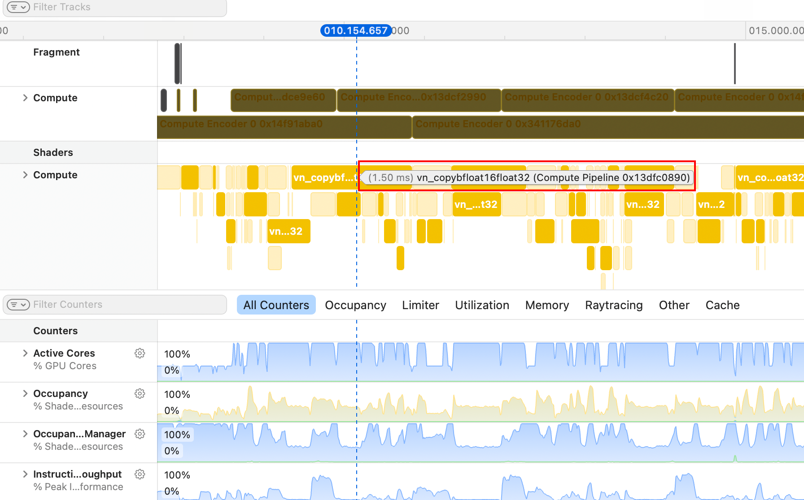
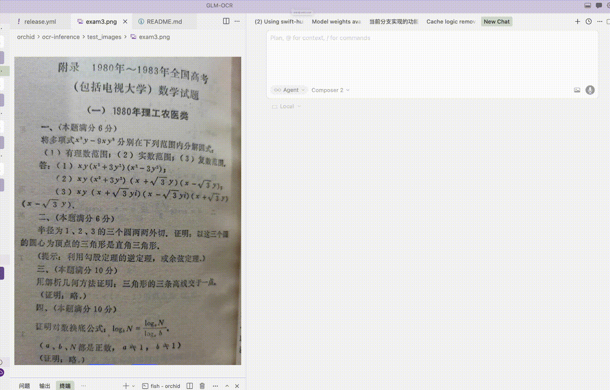

MLX 初体验
从公司领到了人生第一台MacBook，据说苹果的GPU有一套虽然没有CUDA那么庞大，但是封装的比较好的生态，于是开始尝试玩苹果的GPU。
跑通
首先跑通了mlx-vlm的GLM-OCR。这个是一键安装的，识别率相比之前用的软件内置的垃圾OCR有了质的飞跃。于是想把他做成内置的屏幕识别OCR App。
AI做这种项目很快，Swift + AppKit 搓一个出来不过半小时的事情，调一调UI就能用了。
但是，我实在是不希望运行库依赖Python环境，主要不是因为大小，而是因为脆弱、不好分发。Python环境很容易报错，而且一个不小心就乱掉了。
迁移
mlx有binding的语言：Python，Swift，C（official），Rust（unofficial）。
显然我没有能力指挥AI写C项目。因此在Swift和Rust之间进行选择。我想到这部分代码很可能是需要人工介入的，因此选了我更熟悉的Rust。
让Claude扫一遍仓库之后，得知复刻仓库需要：mlx-rs，tokenizer，minijinja，swift-huggingface等库。
显然这些库都没有在LLM的训练素材里面出现过足够次数。一个比较好的办法把库直接拉下来提供给LLM参考。
实现
参考忒修斯之鱼，port采取的是忒修斯之船的方式。
-
先让LLM换掉decoder（https://github.com/blossom-slopware/glm-ocr-rs/commit/bf7a53852ee19cff029c449771ea665cd8e39394）
-
再换掉Vision Encoder （https://github.com/blossom-slopware/glm-ocr-rs/commit/1796053a5a45f37a2ace74ba40852edccc2a206e）
-
最后换掉tokenizer和http server （https://github.com/blossom-slopware/glm-ocr-rs/commit/bd1736ee4f54771ec4f91cf5c5460aa24a412f56）
于是出现了第一个能工作的版本。数值并不bit exact match，一开始我还比较担心；但是整个移植进行完之后，quality-wise是正确的。
性能问题
Python版本有100～110 tok/s；Rust版只有33 tok/s.
首先我让codex帮忙review，他很快就找到了第一个卡点：Python使用预分配、按每隔N个token的threshold，chunk增长的KVCache；Rust则是用的mlx-rs自带的naive KVCache。这里批评一下Opus，我已经在plan里面多次强调要忠于原始实现。移植完这个KVCache之后，速度上升到36tok/s，并且速度变稳定了，不会再波动。
但是显然这个性能并不好。我开始尝试PGO：但是Profile遇到了许多卡点。下列许多事情都是codex告诉我的：
- 为了profile能够显示kernel name、gpu timeline等重要信息，必须设置一个环境变量
MLX_METAL_DEBUG，导致我需要去patch mlx-rs甚至mlx-c库 - profile没有结构化文字输出，只能导入到Xcode GUI查看。
好在界面还不算太过反人类。

一番摸索之后，我了解到了瓶颈：1，fp32 -> bf16类型转换占据了特别多的GPU时间；2，大部分GEMM都是在fp32下计算的。这显然不对。
于是我让Claude在整个仓库打上log，输出decode阶段所有tensor的shape和dtype。惊人的发现：SDPA的输入是bf16，输出居然是fp32！然后后续的计算就全用fp32计算了。十分诡异的设计。 解决方法是SDPA的输出手动cast到bf16。
这样修复后，除了RoPE之外，进入所有算子的数据类型都是bf16了。性能直接达到120 tok/s，非常棒的速度。

代码：
小剧场
Rust编译是真的慢🤣 静态链接了几乎所有依赖，导致CI的时候如果cache miss就要编译巨量的东西。 我项目里依赖了一些大库，包括tokio, axum，mlx-rs(依赖mlx-c)，cache miss的ci跑一次要12分钟，80%以上的时间都在编译Rust库。慢点就慢点吧，美丽的包管理总要有点tradeoff。